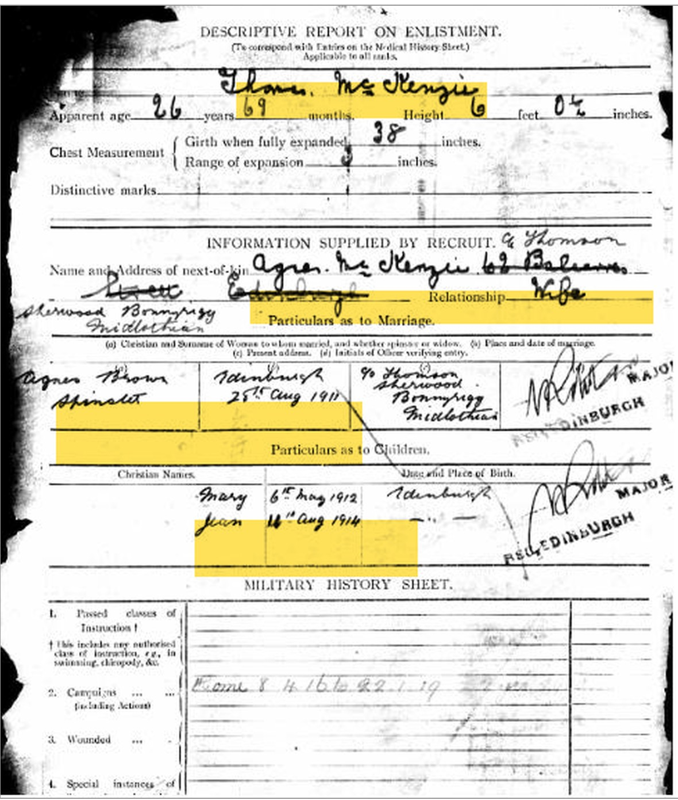

Item 21 · Undated
Army enlistment report: Thomas McKenzie
The document

This copy carries yellow highlighting or red outlining added for the book site. It is not on the original.
Tap an image to open it full size.
Transcription, word for word
Everything as written, including misspellings. [?] marks an uncertain reading. Struck-through words are marked as struck through. Notes in square brackets describe the page and are not part of it.
[Printed] DESCRIPTIVE REPORT ON ENLISTMENT. [Printed] (To correspond with Entries on the Medical History Sheet.) Applicable to all ranks. [Name, handwritten] Thomas McKenzie Apparent age 26 years 6[?] months. Height 6 feet 0¼ inches. Chest Measurement: Girth when fully expanded 38 inches. Range of expansion [figure, illegible] inches. Distinctive marks: [blank] [Printed] INFORMATION SUPPLIED BY RECRUIT. [handwritten beside it] G. Thomson Name and Address of next-of-kin: Agnes McKenzie [62 Balcarres Street Edinburgh — struck through] [written below] Sherwood Bonnyrigg Midlothian Relationship: Wife [Printed] Particulars as to Marriage. [Printed] (a) Christian and Surname of Woman to whom married, and whether spinster or widow. (b) Place and date of marriage. (c) Present address. (d) Initials of Officer verifying entry. (a) Agnes Brown Spinster (b) Edinburgh 28th Aug 1911 (c) 90[?] Thomson[?] Sherwood Bonnyrigg Midlothian (d) [signature, illegible] [stamp] MAJOR ... EDINBURGH [Printed] Particulars as to Children. Christian Names. | Date and Place of Birth. Mary | 6th May 1912 | Edinburgh Jean | 14th Aug 1914 | " " [signature, illegible] [stamp] MAJOR R... EDINBURGH [Printed] MILITARY HISTORY SHEET. 1. Passed classes of Instruction † [† This includes any authorised class of instruction, e.g., in swimming, chiropody, &c.] 2. Campaigns (including Actions) — [handwritten, faint] Home 8 4 16 to 22 7 19[?] 3. Wounded 4. Special instances of [cut off]